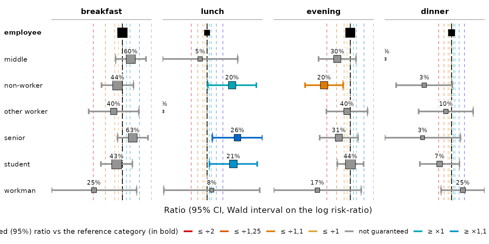

Introduction à tabxplor : tableaux croisés avec tab()
Source:vignettes/articles/tabxplor-fr.Rmd
tabxplor-fr.RmdLa première fois seulement, installer le package :
install.packages("tabxplor", dependencies = TRUE)Au début de chaque nouvelle session R ou en haut d’un script, le charger :
tabxplor vise à l’exploration des données au
moyen de tableaux croisés. Il colore les écarts par rapport au
Total, ou par rapport à une catégorie de référence, pour montrer la
structure du tableau en un coup d’œil. Les cases sur-représentées
prennent des nuances de bleu, les sous-représentées des nuances du jaune
au rouge.
Le tableau qui en résulte est un data.frame habituel, un
tibble modifiable avec tous les verbes dplyr
habituels. Il s’exporte vers Excel, HTML et Markdown avec ses repères de
couleur.
Pas besoin de R pour qui préfère utiliser une interface
graphique. Tout ce qui suit existe aussi en version «
presse-bouton », via un module pour le logiciel libre jamovi. L’installer, ouvrir le menu
des modules (le + en haut à droite),
choisir bibliothèque de jamovi, chercher
tabxplor dans la barre de recherche et l’installer : cela
ajoute une analyse Tableaux croisés et une analyse
Modèles de régression. Les boutons y portent le nom des
arguments enseignés ici.
Tout au long de cette introduction, nous utilisons
gss_simple, une version du General Social Survey
états-unien (forcats::gss_cat) avec des modalités
regroupées.
gss_simple <- gss_cat_data_formatting()Premiers tableaux croisés
tab() a besoin d’un data frame, d’une variable
en ligne et d’une variable en colonne. Par
défaut, il affiche des effectifs :
tab(gss_simple, marital, race)| race | ||||
|---|---|---|---|---|
| marital | White | Black | Other | Total |
| <n> | <n> | |||
| Married | 8 316 | 869 | 932 | 10 117 |
| Separated | 437 | 196 | 110 | 743 |
| Divorced | 2 676 | 495 | 212 | 3 383 |
| Widowed | 1 475 | 262 | 70 | 1 807 |
| Never married | 3 478 | 1 305 | 633 | 5 416 |
| NA | 13 | 2 | 2 | 17 |
| Total | 16 395 | 3 129 | 1 959 | 21 483 |
Voici le tableau html de tabxplor — celui qu’on obtient dans le panneau Viewer de RStudio ou de Positron avec l’option recommandée, utilisée dans toute cette page :
options(tabxplor.print = "html")Sans l’option, le même tableau s’imprime dans la
console, sous forme de tibble
éventuellement coloré :
tab(gss_simple, marital, race)#> # A tabxplor tab: 7 × 5
#> marital White Black Other Total
#> <n> <n> <n> <n>
#> 1 Married 8 316 869 932 10 117
#> 2 Separated 437 196 110 743
#> 3 Divorced 2 676 495 212 3 383
#> 4 Widowed 1 475 262 70 1 807
#> 5 Never married 3 478 1 305 633 5 416
#> 6 NA 13 2 2 17
#> 7 Total 16 395 3 129 1 959 21 483Les données sont états-uniennes et leurs modalités restent en anglais
: marital est le statut matrimonial (Married
marié·e, Never married jamais marié·e,
Divorced divorcé·e, Widowed veuf·ve,
Separated séparé·e) et race la couleur de peau
déclarée (White blanche, Black noire,
Other autre).
Ajouter pct = "row" pour des pourcentages en ligne (ou
"col" pour des pourcentages en colonne) :
tab(gss_simple, marital, race, pct = "row")| race | ||||
|---|---|---|---|---|
| marital | White | Black | Other | Total |
| <row%> | <row% (n)> | |||
| Married | 82% | 9% | 9% | 100% (10 117) |
| Separated | 59% | 26% | 15% | 100% ( 743) |
| Divorced | 79% | 15% | 6% | 100% ( 3 383) |
| Widowed | 82% | 14% | 4% | 100% ( 1 807) |
| Never married | 64% | 24% | 12% | 100% ( 5 416) |
| NA | 76% | 12% | 12% | 100% ( 17) |
| Total | 76% | 15% | 9% | 100% (21 483) |
Quand la variable en colonne est numérique,
tab() affiche sa moyenne dans chaque ligne
:
tab(gss_simple, marital, age)| age | |
|---|---|
| marital | mean |
| <mean (cv)> | |
| Married | 49 (cv 31%) |
| Separated | 45 (cv 30%) |
| Divorced | 51 (cv 26%) |
| Widowed | 72 (cv 18%) |
| Never married | 34 (cv 40%) |
| NA | 52 (cv 32%) |
| Total | 47 (cv 37%) |
Il est possible de passer plusieurs variables en ligne et en colonne à la fois.
| party3 | tvhours | |||||
|---|---|---|---|---|---|---|
| levels | 1-Democrat |
2-Independent, other |
3-Republican | Total | mean | |
| <row%> | <row% (n)> | <mean (cv)> | ||||
| race | White | 40% | 20% | 40% | 100% ( 8 544) | 2.8 (cv 84%) |
| Black | 76% | 16% | 8% | 100% ( 1 676) | 4.2 (cv 83%) | |
| Other | 52% | 30% | 18% | 100% ( 1 014) | 2.7 (cv 85%) | |
| Total | 46% | 20% | 33% | 100% (11 234) | 3.0 (cv 86%) | |
| relig | 1-Protestant | 44% | 16% | 40% | 100% ( 5 629) | 3.1 (cv 86%) |
| 2-Catholic | 47% | 21% | 32% | 100% ( 2 681) | 3.0 (cv 80%) | |
| 3-Other christian | 42% | 24% | 35% | 100% ( 424) | 2.8 (cv 90%) | |
| 4-Jewish | 67% | 14% | 20% | 100% ( 189) | 2.5 (cv 82%) | |
| 5-Buddhist/Hinduist | 60% | 22% | 17% | 100% ( 116) | 2.2 (cv 85%) | |
| 6-Muslim | 63% | 24% | 13% | 100% ( 63) | 2.4 (cv 89%) | |
| 7-Other | 50% | 29% | 21% | 100% ( 203) | 2.7 (cv 91%) | |
| 8-None | 51% | 31% | 18% | 100% ( 1 929) | 2.7 (cv 95%) | |
| Total | 46% | 20% | 33% | 100% (11 234) | 3.0 (cv 86%) | |
Ici relig est la religion déclarée, party3
l’orientation partisane en trois postes (Democrat,
Independent, Republican) et
tvhours le nombre d’heures de télévision par jour.
Quelques autres arguments utiles : na = "drop" pour
retirer les valeurs manquantes de la base ; digits = pour
choisir le nombre de décimales ; cleannames = TRUE pour
retirer des préfixes comme "1-" des noms de modalités. Voir
?tab pour la liste complète.
Quand l’entrée n’est pas une base de données individualisées mais des
effectifs déjà comptés (un tableau publié, un table(), un
count()), le point de départ est tab_counts().
Il construit le même objet, avec les mêmes pourcentages, les mêmes
couleurs et les mêmes tests :
counts <- dplyr::count(gss_simple, marital, race)
tab_counts(counts, marital, race, counts = n, pct = "row", color = "difference")| race | ||||
|---|---|---|---|---|
| marital | White | Black | Other | Total |
| <row%> | <row% (n)> | |||
| Married | 82% | 9% | 9% | 100% (10 117) |
| Separated | 59% | 26% | 15% | 100% ( 743) |
| Divorced | 79% | 15% | 6% | 100% ( 3 383) |
| Widowed | 82% | 14% | 4% | 100% ( 1 807) |
| Never married | 64% | 24% | 12% | 100% ( 5 416) |
| NA | 76% | 12% | 12% | 100% ( 17) |
| Total | 76% | 15% | 9% | 100% (21 483) |
|
Percentage points (risk) difference : cell ≥ the Total row +5 ; +10 ; +20 ; +30 points ; cell ≤ the Total row -5 ; -10 ; -20 ; -30 points.
|
||||
Les couleurs : lire un tableau d’un coup d’œil
C’est l’objet même de tabxplor : une gamme de repères de
couleur personnalisables pour l’exploration de données, fondée sur une
certaine mesure de l’écart par rapport à une catégorie de
référence, "difference", "ratio" ou
"odds ratio".
color = "difference" colore chaque case selon sa
différence à sa référence, par défaut le Total de sa ligne ou de sa
colonne. Les cases nettement au-dessus de la moyenne deviennent
bleues, celles nettement en dessous
rouge/orange — plus l’écart est grand, plus la nuance
est forte.
tab(gss_simple, race, party3, pct = "row", color = "difference")| party3 | |||||
|---|---|---|---|---|---|
| race | 1-Democrat |
2-Independent, other |
3-Republican | NA | Total |
| <row%> | <row% (n)> | ||||
| White | 39% | 21% | 40% | 1% | 100% (16 395) |
| Black | 75% | 16% | 8% | 1% | 100% ( 3 129) |
| Other | 48% | 32% | 18% | 1% | 100% ( 1 959) |
| Total | 45% | 21% | 33% | 1% | 100% (21 483) |
|
Percentage points (risk) difference : cell ≥ the Total row +5 ; +10 ; +20 ; +30 points ; cell ≤ the Total row -5 ; -10 ; -20 ; -30 points.
|
|||||
color = "auto" choisit automatiquement un schéma adapté
à chaque type de colonne (“difference” comme couleur de texte et “ratio”
comme couleur d’arrière-plan pour des pourcentages ; “ratio” seul pour
des moyennes ; etc.) :
| party3 | marital | ||||||||||
|---|---|---|---|---|---|---|---|---|---|---|---|
| rincome | 1-Democrat |
2-Independent, other |
3-Republican | NA | Married | Separated | Divorced | Widowed | Never married | NA | Total |
| <row%> | <row%> | <row% (n)> | |||||||||
| 1-Lt $10000 | 44% | 25% | 30% | 1% | 37% | 5% | 11% | 4% | 43% | 0% | 100% ( 2 153) |
| 2-$10000 to 14999 | 46% | 26% | 27% | 1% | 41% | 5% | 16% | 5% | 33% | 0% | 100% ( 1 168) |
| 3-$15000 to 24999 | 45% | 25% | 29% | 0% | 43% | 4% | 18% | 3% | 31% | 0% | 100% ( 2 331) |
| 4-$25000 or more | 45% | 16% | 38% | 0% | 55% | 3% | 18% | 2% | 22% | 0% | 100% ( 7 363) |
| NA | 45% | 22% | 32% | 1% | 45% | 3% | 14% | 17% | 21% | 0% | 100% ( 8 468) |
| Total | 45% | 21% | 33% | 1% | 47% | 3% | 16% | 8% | 25% | 0% | 100% (21 483) |
|
Percentage points (risk) difference : cell ≥ the Total row +5 ; +10 ; +20 ; +30 points ; cell ≤ the Total row -5 ; -10 ; -20 ; -30 points. Background colour, relative
risk (ratio) : cell ≥ the Total row ×1,5
; ×2
; cell ≤ the Total row ÷2
; ÷4.
|
|||||||||||
Les colonnes numériques sont colorées de la même façon, sur leurs
différences de moyennes (ici, les heures de télévision par jour selon la
tranche de revenu rincome) :
tab(gss_simple, rincome, tvhours, color = "difference")| tvhours | |
|---|---|
| rincome | mean |
| <mean (cv)> | |
| 1-Lt $10000 | 3.1 (cv 91%) |
| 2-$10000 to 14999 | 3.0 (cv 78%) |
| 3-$15000 to 24999 | 2.8 (cv 75%) |
| 4-$25000 or more | 2.2 (cv 74%) |
| NA | 3.6 (cv 86%) |
| Total | 3.0 (cv 87%) |
|
Standardized mean difference : cell ≥ the Total row +0,1 ; +0,2 ; +0,4 ; +0,8 SD ; cell ≤ the Total row -0,1 ; -0,2 ; -0,4 ; -0,8 SD.
|
|
Quelle case sert de référence pour la comparaison ? Par défaut, chaque case est comparée au Total pertinent (ligne Total pour les pourcentages en ligne, colonne Total pour les pourcentages en colonne) : la couleur met ainsi en évidence sur-représentations et sous-représentations. Deux variantes utiles :
ref = 1 compare chaque modalité à la première
catégorie — parfait pour lire une évolution dans le temps, ou
une variable ordinale. Ici, nous choisissons de mesurer l’écart par
rapport à l’an 2000 sous la forme d’un rapport
(color = "ratio") :
tab(gss_simple, relig, year, pct = "col", color = "ratio", ref = 1)| year | |||||||||
|---|---|---|---|---|---|---|---|---|---|
| relig | 2000 | 2002 | 2004 | 2006 | 2008 | 2010 | 2012 | 2014 | Total |
| <col%> | <col%> | ||||||||
| 1-Protestant | 54% | 53% | 53% | 52% | 51% | 48% | 46% | 44% | 50% |
| 2-Catholic | 24% | 24% | 23% | 25% | 23% | 24% | 22% | 24% | 24% |
| 3-Other christian | 2% | 3% | 3% | 3% | 4% | 5% | 6% | 6% | 4% |
| 4-Jewish | 2% | 2% | 2% | 2% | 2% | 2% | 1% | 2% | 2% |
| 5-Buddhist/Hinduist | 1% | 1% | 1% | 1% | 1% | 1% | 1% | 2% | 1% |
| 6-Muslim | 0% | 0% | 1% | 0% | 1% | 1% | 1% | 0% | 0% |
| 7-Other | 2% | 2% | 3% | 1% | 1% | 2% | 2% | 1% | 2% |
| 8-None | 14% | 14% | 14% | 16% | 16% | 18% | 20% | 21% | 16% |
| NA | 0% | 1% | 0% | 1% | 0% | 1% | 0% | 1% | 1% |
| Total | 100% | 100% | 100% | 100% | 100% | 100% | 100% | 100% | 100% |
| n | 2 817 | 2 765 | 2 812 | 4 510 | 2 023 | 2 044 | 1 974 | 2 538 | 21 483 |
|
Relative risk (ratio) : cell ≥ the reference category (in bold) ×1,1 ; ×1,2 ; ×1,5 ; ×2 ; cell ≤ ref ÷1,1 ; ÷1,25 ; ÷2 ; ÷4.
|
|||||||||
Avec des sous-tableaux (tab_vars =),
comp = "all" compare au Total d’ensemble
plutôt qu’au Total de chaque sous-tableau.
tab(gss_simple, rincome, party3, race, na = "drop", pct = "row",
color = "auto", comp="all")| party3 | ||||
|---|---|---|---|---|
| rincome | 1-Democrat |
2-Independent, other |
3-Republican | Total |
| <row%> | <row% (n)> | |||
| 1-Lt $10000 | 38% | 26% | 36% | 100% ( 1 501) |
| 2-$10000 to 14999 | 40% | 27% | 33% | 100% ( 828) |
| 3-$15000 to 24999 | 38% | 26% | 36% | 100% ( 1 682) |
| 4-$25000 or more | 39% | 17% | 45% | 100% ( 5 843) |
| Total White | 39% | 20% | 41% | 100% ( 9 854) |
| 1-Lt $10000 | 67% | 22% | 11% | 100% ( 374) |
| 2-$10000 to 14999 | 76% | 14% | 10% | 100% ( 207) |
| 3-$15000 to 24999 | 79% | 15% | 6% | 100% ( 400) |
| 4-$25000 or more | 81% | 12% | 7% | 100% ( 881) |
| Total Black | 77% | 15% | 8% | 100% ( 1 862) |
| 1-Lt $10000 | 49% | 31% | 20% | 100% ( 264) |
| 2-$10000 to 14999 | 43% | 44% | 13% | 100% ( 125) |
| 3-$15000 to 24999 | 45% | 39% | 16% | 100% ( 243) |
| 4-$25000 or more | 56% | 22% | 22% | 100% ( 618) |
| Total Other | 51% | 30% | 19% | 100% ( 1 250) |
| Total Ensemble | 45% | 20% | 34% | 100% (12 966) |
|
Percentage points (risk) difference : cell ≥ the Total Ensemble row
+5 ; +10 ; +20 ; +30 points ; cell ≤ the Total Ensemble
row -5 ; -10 ; -20 ; -30 points. Background colour, relative
risk (ratio) : cell ≥ the Total Ensemble row ×1,5
; ×2
; cell ≤ the Total Ensemble row ÷2
; ÷4.
|
||||
Une référence différente pour chaque variable.
ref est réinterprété selon le type de pct.
Sous des pourcentages en ligne (ou des moyennes), il
désigne une ligne de référence : un vecteur
nommé en donne donc une par variable en ligne — ici
race est lu par rapport à sa première ligne,
relig par rapport à son Total :
tab(gss_simple, c(race, relig), party3, pct = "row", na = "drop",
color = "difference", ref = c(race = 1, relig = "tot") )| party3 | |||||
|---|---|---|---|---|---|
| levels | 1-Democrat |
2-Independent, other |
3-Republican | Total | |
| <row%> | <row% (n)> | ||||
| race | White | 39% | 21% | 40% | 100% (16 301) |
| Black | 76% | 17% | 8% | 100% ( 3 093) | |
| Other | 49% | 33% | 18% | 100% ( 1 934) | |
| Total | 45% | 21% | 33% | 100% (21 328) | |
| relig | 1-Protestant | 43% | 17% | 40% | 100% (10 794) |
| 2-Catholic | 46% | 22% | 32% | 100% ( 5 090) | |
| 3-Other christian | 42% | 24% | 34% | 100% ( 778) | |
| 4-Jewish | 68% | 12% | 20% | 100% ( 388) | |
| 5-Buddhist/Hinduist | 57% | 29% | 14% | 100% ( 212) | |
| 6-Muslim | 66% | 22% | 12% | 100% ( 99) | |
| 7-Other | 48% | 29% | 24% | 100% ( 384) | |
| 8-None | 50% | 31% | 19% | 100% ( 3 509) | |
| Total | 45% | 21% | 34% | 100% (21 254) | |
|
Percentage points (risk) difference : cell ≥ the reference category (in
bold) +5 ; +10 ; +20 ; +30 points ; cell ≤ ref -5 ; -10 ; -20 ; -30 points.
|
|||||
Les seuils de couleur et la palette sont personnalisables :
set_color_breaks() et set_color_palette() les
fixent une fois pour toute la session R.
Des couleurs qui respectent la significativité
Les couleurs ci-dessus montrent la taille d’un écart, mais
ne disent pas s’il est statistiquement fiable. Sur de
petits échantillons, une différence qui semble marquée peut n’être que
du bruit, dû au hasard de la sélection de l’échantillon. L’argument
color_signif fait entrer la significativité dans les
repères de couleur :
-
"ignore"(par défaut) : colore chaque écart selon l’écart observé, en grisant les différences trop petites, sous un certain seuil (±5 % pour une différence). -
"grey_non_signif": colore selon la taille de l’écart, grise les petits écarts sous ce même seuil, mais grise aussi les cases dont l’écart paraît important sans être significatif. Chaque case colorée est alors garantie significativement différente de sa référence (seuil de confiance de 95 %), sans que le tableau soit encombré par de très petites différences significatives. -
"guaranteed_effect": ne colore que la part de l’écart dont on est certains à 95 % (la borne inférieure de son intervalle de confiance), avec donc des couleurs plutôt moins foncées. À utiliser sur de petits échantillons, pour mettre en évidence toutes les différences qu’on a le droit d’interpréter. Tout ce qui est coloré est significatif ; rien de ce qui est gris ne l’est.
tab(gss_simple, race, party3, pct = "row",
color = "difference", color_signif = "grey_non_signif")| party3 | |||||
|---|---|---|---|---|---|
| race | 1-Democrat |
2-Independent, other |
3-Republican | NA | Total |
| <row%> | <row% (n)> | ||||
| White | 39% | 21% | 40% | 1% | 100% (16 395) |
| Black | 75% | 16% | 8% | 1% | 100% ( 3 129) |
| Other | 48% | 32% | 18% | 1% | 100% ( 1 959) |
| Total | 45% | 21% | 33% | 1% | 100% (21 483) |
|
Percentage points (risk) difference : cell ≥ the Total row +5 ; +10 ; +20 ; +30 points ; cell ≤ the Total row -5 ; -10 ; -20 ; -30 points. Uncoloured: not
significantly different from the Total row (Newcombe score interval, 95%
confidence) or under the first colour threshold (±5 points).
|
|||||
gss_simple |>
dplyr::filter(year == "2012") |> # n=1 974
tab(race, party3, pct = "row",
color = "difference", color_signif = "guaranteed_effect")| party3 | |||||
|---|---|---|---|---|---|
| race | 1-Democrat |
2-Independent, other |
3-Republican | NA | Total |
| <row%> | <row% (n)> | ||||
| White | 40% | 22% | 37% | 1% | 100% (1 477) |
| Black | 81% | 14% | 5% | 0% | 100% ( 301) |
| Other | 47% | 32% | 19% | 2% | 100% ( 196) |
| Total | 47% | 22% | 30% | 1% | 100% (1 974) |
|
95%-guaranteed percentage points (risk) difference (Newcombe score
interval floor) from the Total row +0 ; +5 ; +10 ; +20 ; -0 ; -5 ; -10 ; -20 points. Uncoloured: not
significantly different from the Total row.
|
|||||
Sur de petits échantillons, un pourcentage qui
semble marqué peut reposer sur une poignée de répondants.
n_min = est un filtre purement visuel, appliqué une fois
que tous les calculs ont été réalisés : il masque les cases dont la base
(non pondérée) est sous le seuil, et retire entièrement une ligne quand
sa plus grande base est trop faible. Ici, les religions les plus rares
disparaissent :
tab(gss_simple, relig, race, pct = "row", n_min = 400)| race | ||||
|---|---|---|---|---|
| relig | White | Black | Other | Total |
| <row%> | <row% (n)> | |||
| 1-Protestant | 75% | 21% | 4% | 100% (10 846) |
| 2-Catholic | 78% | 4% | 18% | 100% ( 5 124) |
| 3-Other christian | 72% | 18% | 10% | 100% ( 784) |
| 8-None | 80% | 11% | 9% | 100% ( 3 523) |
| Total | 76% | 15% | 9% | 100% (21 483) |
L’autre solution est de garder les lignes et les colonnes rares, mais de les regrouper toutes dans une modalité « Autres » :
tab(gss_simple, relig, race, pct = "row", other_if_less_than = 400)| race | ||||
|---|---|---|---|---|
| relig | White | Black | Other | Total |
| <row%> | <row% (n)> | |||
| 1-Protestant | 75% | 21% | 4% | 100% (10 846) |
| 2-Catholic | 78% | 4% | 18% | 100% ( 5 124) |
| 3-Other christian | 72% | 18% | 10% | 100% ( 784) |
| 8-None | 80% | 11% | 9% | 100% ( 3 523) |
| Others | 68% | 10% | 22% | 100% ( 1 098) |
| NA | 67% | 18% | 16% | 100% ( 108) |
| Total | 76% | 15% | 9% | 100% (21 483) |
Intervalles de confiance, tests et étoiles
Afficher l’intervalle de confiance du pourcentage ou de la moyenne de
chaque case avec ci = "cell" :
tab(gss_simple, race, party3, pct = "row", ci = "cell") # par défaut, conf_level = 0.95| party3 | |||||
|---|---|---|---|---|---|
| race | 1-Democrat |
2-Independent, other |
3-Republican | NA | Total |
| <row%-ci> | <row% (n)> | ||||
| White | [38;40]% | [20;21]% | [39;41]% | [0;1]% | 100% (16 395) |
| Black | [73;76]% | [15;18]% | [7;9]% | [1;2]% | 100% ( 3 129) |
| Other | [46;50]% | [30;34]% | [16;20]% | [1;2]% | 100% ( 1 959) |
| Total | [44;46]% | [20;22]% | [33;34]% | [1;1]% | 100% (21 483) |
Afficher les intervalles de confiance de l’écart avec une référence, ceux-là mêmes qui servent à calculer la significativité (ici si 0 appartient à l’intervalle, la case n’est pas significativement différente de la référence, ici la ligne Total ; idem autour de la valeur nulle 1 pour un “ratio” ou un “odds ratio”) :
gss_simple |>
dplyr::filter(year == "2012") |> # n=1 974
tab(race, party3, pct = "row",
color = "difference", ref = 1, color_signif = "guaranteed_effect",
display = "base_ci" # "{base} {ci}"
)| party3 | |||||
|---|---|---|---|---|---|
| race | 1-Democrat |
2-Independent, other |
3-Republican | NA | Total |
| <row% ci> | <row% (n)> | ||||
| White | 40% | 22% | 37% | 1% | 100% (1 477) |
| Black | 81% [+35;+45]% | 14% [-12;-3]% | 5% [-35;-28]% | 0% [-1;+1]% | 100% ( 301) |
| Other | 47% [-0;+14]% | 32% [+3;+17]% | 19% [-24;-12]% | 2% [+0;+5]% | 100% ( 196) |
| Total | 47% [+3;+10]% | 22% [-3;+3]% | 30% [-10;-4]% | 1% [-1;+1]% | 100% (1 974) |
|
95%-guaranteed percentage points (risk) difference (Newcombe score
interval floor) from the reference category (in bold) +0 ; +5 ; +10 ; +20 ; -0 ; -5 ; -10 ; -20 points. Uncoloured: not
significantly different from the reference category.
|
|||||
display = "base_ci" permet d’afficher le chiffre de
base, pourcentage ou moyenne, à côté de son intervalle de confiance.
display = "ci" affiche l’intervalle de confiance seul.
stars = TRUE ajoute des étoiles de significativité.
Elles racontent la même histoire que les intervalles de confiance de
l’écart avec la référence, mais pour d’autres seuils de confiance (99 %,
95 %, 90 %) :
gss_simple |>
dplyr::filter(year == "2012") |> # n=1 974
tab(rincome, party3, pct = "row", ref = 1, display = "ci", stars = TRUE)| party3 | |||||
|---|---|---|---|---|---|
| rincome | 1-Democrat |
2-Independent, other |
3-Republican | NA | Total |
| <mixed> | <n> | ||||
| 1-Lt $10000 | 40% | 33% | 27% | 0% | ( 200) |
| 2-$10000 to 14999 | [-6;+17]% | [-16;+5]% | [-11;+10]% | [-1;+6]% | ( 103) |
| 3-$15000 to 24999 | [+1;+20]%** | [-17;+1]%* | [-11;+6]% | [-3;+1]% | ( 194) |
| 4-$25000 or more | [+2;+18]%** | [-25;-10]%*** | [+0;+14]%** | [-2;+1]% | ( 649) |
| NA | [+0;+15]%** | [-18;-4]%*** | [-4;+9]% | [-2;+2]% | ( 828) |
| Total | [+1;+15]%** | [-18;-5]%*** | [-3;+9]% | [-2;+1]% | (1 974) |
|
***: significantly different from the reference category (in bold) at
the 99% confidence level ; **: at the 95% level ; *: at the 90% level ;
no star: not significant.
|
|||||
test = TRUE ajoute un test statistique d’indépendance
par (sous-)tableau : test du Chi2 pour les variables de
colonne catégorielles, ANOVA F de Welch pour les
variables numériques (options(tabxplor.anova = "classic")
bascule vers l’ANOVA F classique, à variance commune) :
| party3 | tvhours | |||||
|---|---|---|---|---|---|---|
| race | 1-Democrat |
2-Independent, other |
3-Republican | NA | Total | mean |
| <row%> | <row% (n_range)> | <mean (cv)> | ||||
| White | 39% | 21% | 40% | 1% | 100% ( 8 610-16 395) | 2.8 (cv 84%) |
| Black | 75% | 16% | 8% | 1% | 100% ( 1 700- 3 129) | 4.2 (cv 84%) |
| Other | 48% | 32% | 18% | 1% | 100% ( 1 027- 1 959) | 2.8 (cv 87%) |
| Total | 45% | 21% | 33% | 1% | 100% (11 337-21 483) | 3.0 (cv 87%) |
| pvalue (Chi2, Welch F) | <0.01% | <0.01% | ||||
| Cramér’s V, eta2 | 0.21 | 0.04 | ||||
Batteries d’items oui/non, et un score
Les questions à réponses multiples, classiques dans
les données d’enquête, se présentent sous la forme d’une batterie de
réponses Oui/Non, avec une variable par réponse possible.
levels = "first" ne garde que la première modalité : tout
tient alors dans un tableau compact, une colonne par item.
Les données tea du package FactoMineR,
de François Husson, Julie Josse, Sébastien Lê et Jérémy Mazet – merci à
eux –, posent à 300 pratiquants la question quand buvez-vous du
thé ?
tea_when_vars <- c("breakfast", "lunch", "tea.time", "evening", "dinner", "always")
# levels(facto_tea$breakfast) # toujours la reponse « oui » en premier
tea <- facto_tea |> score_from_lv1("tea_when", vars_list = tea_when_vars)
tab(tea, SPC, all_of(c(tea_when_vars, "tea_when")), pct = "row", levels = "first",
na = "drop", color = "difference")| breakfast | lunch | tea.time | evening | dinner | always | tea_when | ||
|---|---|---|---|---|---|---|---|---|
| SPC | n | breakfast_lv | lunch_lv | tea time | evening_lv | dinner_lv | always_lv | mean |
| <n> | <row%> | <row%> | <row%> | <row%> | <row%> | <row%> | <mean (cv)> | |
| employee | 59 | 49% | 7% | 53% | 44% | 14% | 34% | 2.0 (cv 54%) |
| middle | 40 | 60% | 5% | 48% | 30% | 0% | 28% | 1.7 (cv 52%) |
| non-worker | 64 | 44% | 20% | 59% | 20% | 3% | 23% | 1.7 (cv 56%) |
| other worker | 20 | 40% | 0% | 60% | 40% | 10% | 35% | 1.9 (cv 50%) |
| senior | 35 | 63% | 26% | 57% | 31% | 3% | 34% | 2.1 (cv 50%) |
| student | 70 | 43% | 21% | 61% | 44% | 7% | 50% | 2.3 (cv 50%) |
| workman | 12 | 25% | 8% | 50% | 17% | 25% | 25% | 1.5 (cv 53%) |
| Total | 300 | 48% | 15% | 56% | 34% | 7% | 34% | 1.9 (cv 54%) |
|
breakfast, lunch, tea.time, evening, dinner, always — Percentage points
(risk) difference : cell ≥ the Total row +5 ; +10 ; +20 ; +30 points ; cell ≤ the Total row -5 ; -10 ; -20 ; -30 points.
tea_when — Standardized mean difference : cell ≥ the Total row +0,1 ; +0,2 ; +0,4 ; +0,8 SD ; cell ≤ the Total row -0,1 ; -0,2 ; -0,4 ; -0,8 SD. |
||||||||
score_from_lv1() ajoute une variable de type
score pour compter le nombre de réponses données par
les enquêtés : ici, à combien des six moments différents la personne
boit du thé.
Chaque pourcentage se lit dans sa propre colonne : 63 % des cadres
supérieurs (senior) boivent du thé au petit-déjeuner,
contre 25 % des ouvriers (workman). Il n’y a pas de colonne
Total car la somme ne fait pas 100 %, mais le score moyen par catégorie
joue ce rôle : 2,1 moments par jour en moyenne pour les cadres
supérieurs contre 1,5 pour les ouvriers.
levels = "auto" fait ce choix variable par
variable : il ne garde que la première modalité des facteurs à
deux modalités, et toutes les modalités des autres.
Sous-tableaux et multiples variables de ligne
Donner à tab() une troisième variable comme
tab_vars construit un sous-tableau par
groupe (ici, un par tranche de revenu). Le résultat est
groupé : les opérations dplyr s’appliquent alors à
l’intérieur de chaque sous-tableau.
tab(gss_simple, race, party3, rincome, na = "drop", pct = "row")| party3 | ||||
|---|---|---|---|---|
| race | 1-Democrat |
2-Independent, other |
3-Republican | Total |
| <row%> | <row% (n)> | |||
| White | 38% | 26% | 36% | 100% ( 1 501) |
| Black | 67% | 22% | 11% | 100% ( 374) |
| Other | 49% | 31% | 20% | 100% ( 264) |
| Total 1-Lt $10000 | 45% | 26% | 30% | 100% ( 2 139) |
| White | 40% | 27% | 33% | 100% ( 828) |
| Black | 76% | 14% | 10% | 100% ( 207) |
| Other | 43% | 44% | 13% | 100% ( 125) |
| Total 2-$10000 to 14999 | 47% | 26% | 27% | 100% ( 1 160) |
| White | 38% | 26% | 36% | 100% ( 1 682) |
| Black | 79% | 15% | 6% | 100% ( 400) |
| Other | 45% | 39% | 16% | 100% ( 243) |
| Total 3-$15000 to 24999 | 46% | 25% | 29% | 100% ( 2 325) |
| White | 39% | 17% | 45% | 100% ( 5 843) |
| Black | 81% | 12% | 7% | 100% ( 881) |
| Other | 56% | 22% | 22% | 100% ( 618) |
| Total 4-$25000 or more | 45% | 16% | 38% | 100% ( 7 342) |
| Total Ensemble | 45% | 20% | 34% | 100% (12 966) |
Quand on passe plusieurs variables en ligne
sans tab_vars, tab() fusionne par
défaut les tableaux jumeaux en un seul. output_list = TRUE
renvoie au contraire une liste, avec un tableau par variable en
ligne (avec des tab_vars, le résultat est toujours
une liste) :
Un tableau très compact : un bloc de colonnes par groupe
spread_vars affiche une variable de sous-tableau
en largeur plutôt qu’en hauteur : chacune de ses
modalités devient un bloc de colonnes. Combiné à
levels = "first", on obtient un tableau très condensé :
tab(tea, SPC, all_of(tea_when_vars), tab_vars = sex, spread_vars = sex,
pct = "row", levels = "first", na = "drop", comp = "all", color = "auto")| breakfast | lunch | tea.time | evening | dinner | always | ||||||||||||||||
|---|---|---|---|---|---|---|---|---|---|---|---|---|---|---|---|---|---|---|---|---|---|
| SPC | F | M | Ensemble | F | M | Ensemble | F | M | Ensemble | F | M | Ensemble | F | M | Ensemble | F | M | Ensemble | F | M | Ensemble |
| <row%> | <row%> | <row%> | <row%> | <row%> | <row%> | <row%> | <row%> | <row%> | <row%> | <row%> | <row%> | <row%> | <row%> | <row%> | <row%> | <row%> | <row%> | <n> | <n> | <n> | |
| employee | 45% | 57% | 49% | 3% | 14% | 7% | 63% | 33% | 53% | 47% | 38% | 44% | 5% | 29% | 14% | 32% | 38% | 34% | 38 | 21 | 59 |
| middle | 52% | 68% | 60% | 5% | 5% | 5% | 57% | 37% | 48% | 19% | 42% | 30% | 0% | 0% | 0% | 48% | 5% | 28% | 21 | 19 | 40 |
| non-worker | 44% | 43% | 44% | 23% | 14% | 20% | 74% | 29% | 59% | 16% | 29% | 20% | 2% | 5% | 3% | 14% | 43% | 23% | 43 | 21 | 64 |
| other worker | 42% | 38% | 40% | 0% | 0% | 0% | 75% | 38% | 60% | 33% | 50% | 40% | 8% | 12% | 10% | 42% | 25% | 35% | 12 | 8 | 20 |
| senior | 56% | 65% | 63% | 56% | 15% | 26% | 67% | 54% | 57% | 22% | 35% | 31% | 0% | 4% | 3% | 33% | 35% | 34% | 9 | 26 | 35 |
| student | 47% | 32% | 43% | 24% | 16% | 21% | 69% | 42% | 61% | 45% | 42% | 44% | 6% | 11% | 7% | 49% | 53% | 50% | 51 | 19 | 70 |
| workman | 50% | 12% | 25% | 0% | 12% | 8% | 75% | 38% | 50% | 0% | 25% | 17% | 0% | 38% | 25% | 50% | 12% | 25% | 4 | 8 | 12 |
| Total | 47% | 50% | 48% | 16% | 12% | 15% | 68% | 39% | 56% | 33% | 37% | 34% | 4% | 11% | 7% | 35% | 33% | 34% | 178 | 122 | 300 |
|
Percentage points (risk) difference : cell ≥ the Total Ensemble row
+5 ; +10 ; +20 ; +30 points ; cell ≤ the Total Ensemble
row -5 ; -10 ; -20 ; -30 points. Background colour, relative
risk (ratio) : cell ≥ the Total Ensemble row ×1,5
; ×2
; cell ≤ the Total Ensemble row ÷2
; ÷4.
|
|||||||||||||||||||||
La mise en page découle de cette forme, et le tableau le dit :
-
comp = "all"compare chaque case au total d’ensemble plutôt qu’à celui de son groupe — ici la caseTotaldu blocEnsemble, en gras.
La pondération
wt = permet d’ajouter une variable de pondération. Les
pourcentages, les moyennes et les écarts deviennent des estimations
pondérées du chiffre de la population de référence de l’échantillon.
Leurs intervalles de confiance et leurs tests statistiques, toutefois, prennent la pondération en compte selon trois options possibles :
- Par défaut, le calcul des marges d’erreurs se fait sur les effectifs non-pondérés (avec les pourcentages pondérés) — c’est la convention de presque tous les logiciels de statistiques. Lorsque les poids sont inégaux, les intervalles sont souvent un peu trop étroits.
-
design_effect = TRUE— chaque intervalle, étoile de significativité, seuil de couleur et test (Chi2, ANOVA F) tient compte de l’inégalité des poids. Les marges d’erreurs sont plus larges mais plus honnêtes. -
un plan de sondage du package
survey::passé commedata =—tabxplorsuit le plan complet : échantillon stratifié, grappes, calage sur marges, etc.
Plus de détails dans Données pondérées et plans de sondage.
Exporter des tableaux
Un tableau fini s’exporte avec ses couleurs vers Excel, HTML ou Markdown :
tabs <- tab(gss_simple, race, party3, pct = "row", color = "difference")
tab_export(tabs) # défaut : tableau html (Viewer de RStudio, .Rmd/.qmd, etc.)
tab_export(tabs, "xl", path = "path/table") # export Excel
tab_export(tabs, "md", path = "path/table") # fichier markdown platLes fonctions tab_html(), tab_xl(),
tab_md() font la même chose.
Pour obtenir un tableau dans Word et l’insérer dans un article, le chemin passe par Excel : le classeur porte les vrais nombres, non-arrondis, si bien qu’on peut encore y faire des calculs et des mises en forme. Il suffit de copier-coller dans Word sous forme de tableau modifiable pour garder la mise en forme exacte. Attention : utiliser les applications installées, car la version sur navigateur web perd le formatage.
theme = "dark" utilise le thème sombre.
theme = "auto" conserve le thème clair/sombre de l’éditeur
de code dans les exports HTML ou Markdown. Pour la console,
set_color_palette(theme = "auto") détecte l’éditeur
(RStudio, Positron, etc.) et choisit la palette correspondante.
tab_export(tabs, theme = "auto")Comme les variables numériques ne peuvent être passées qu’en
colonnes, certaines mises en page complexes avec des variables
numériques en lignes nécessitent de transposer le tableau à l’export,
avec transpose = TRUE :
tab(gss_simple, party3, c(race, tvhours), pct = "row",
color = "ratio", display = "base", n = "min") |>
tab_html(transpose = TRUE)| party3 | ||||||
|---|---|---|---|---|---|---|
| 1-Democrat | 2-Independent, other | 3-Republican | NA | Total | ||
| race | White | 66% | 75% | 92% | 61% | 76% |
| Black | 24% | 11% | 3% | 23% | 15% | |
| Other | 10% | 14% | 5% | 16% | 9% | |
| Total | 100% | 100% | 100% | 100% | 100% | |
| n | 5 220 | 2 319 | 3 734 | 64 | 11 337 | |
| tvhours | mean | 3.2 | 3.1 | 2.7 | 3.2 | 3.0 |
|
race — Relative risk (ratio) : cell ≥ the Total row ×1,1 ; ×1,2 ; ×1,5 ; ×2 ; cell ≤ the Total row ÷1,1 ; ÷1,25 ; ÷2 ; ÷4.
tvhours — Ratio of means : cell ≥ the Total row ×1,1 ; ×1,2 ; ×1,5 ; ×2 ; cell ≤ the Total row ÷1,1 ; ÷1,2 ; ÷1,5 ; ÷2. |
||||||
Passer une liste de plusieurs tableaux dans tab_export()
les affiche les uns à la suite des autres, ou dans différentes feuilles
Excel.
Une seule feuille de style pour tout un document.
Dans un rapport .Rmd/.qmd,
tab_css() écrit le CSS des couleurs une seule fois, et
chaque tableau html suivant n’émet que des classes CSS : un unique
theme met en forme tous les tableaux d’un coup.
options(tabxplor.tab_kable_css = FALSE)
tab_css(theme = "auto") # à émettre une fois, en haut du documentTout reste modifiable via du CSS ordinaire (largeurs de colonnes,
polices…) ; voir ?tab_css pour les classes de rôle
(.tx-rv, .tx-tot, .tx-num).
Noir et blanc, pour la publication
Les couleurs servent à explorer. Pour une revue,
theme = "print_ready" restitue la même lecture en noir et
blanc.
| party3 | |||||
|---|---|---|---|---|---|
| race | 1-Democrat |
2-Independent, other |
3-Republican | NA | Total |
| <row%> | <row% (n)> | ||||
| White | 39%⁻ | 21% | 40%⁺ | 1% | 100% (16 395) |
| Black | 75%⁺⁺⁺ | 16% | 8%⁻⁻⁻ | 1% | 100% ( 3 129) |
| Other | 48% | 32%⁺⁺ | 18%⁻⁻ | 1% | 100% ( 1 959) |
| Total | 45% | 21% | 33% | 1% | 100% (21 483) |
|
Percentage points (risk) difference : cell ≥ the Total row +5⁺ ; +10⁺⁺ ; +20⁺⁺⁺
; +30⁺⁺⁺⁺
points ; cell ≤ the Total row -5⁻ ; -10⁻⁻ ; -20⁻⁻⁻
; -30⁻⁻⁻⁻
points.
|
|||||
Une option globale permet d’utiliser cette palette typographique dans tous les exports :
options(tabxplor.theme = "print_ready")Ce qu’affiche une case : la grammaire display =
Chaque case contient en réalité bien plus que le seul nombre qu’elle
imprime — son effectif, son pourcentage, son écart à la référence, son
intervalle de confiance, etc. display = choisit lequel est
affiché. Rien n’est recalculé : un affichage se choisit après la
construction du tableau, si bien qu’en changer ne change aucun
chiffre.
La voie la plus rapide est d’utiliser les presets suivants :
display = |
ce que montre la case |
|---|---|
"base" |
la base seule — pourcentage, moyenne ou effectif (le défaut) |
"base_ci" |
la base seule et son intervalle de confiance,
48.6 [45.1; 52.1]
|
"base_moe" |
la base seule et sa marge d’erreur, 48.6 ± 3.5
|
"base_diff" |
la base seule et, entre crochets, sa différence à la référence |
"base_ratio" |
la base seule et la même comparaison, sous forme de rapport |
"mean_sd" |
une moyenne et son écart-type (colonnes numériques) |
"mean_cv" |
une moyenne et son coefficient de variation — la dispersion divisée par la moyenne de chaque catégorie, en pourcentage, ce qui la rend comparable entre plusieurs catégories (le défaut sur les colonnes numériques) |
| party3 | tvhours | |||||
|---|---|---|---|---|---|---|
| race | 1-Democrat |
2-Independent, other |
3-Republican | NA | Total | mean |
| <row%> | <row% (n_range)> | <mean> | ||||
| White | 39% | 21% | 40% | 1% | 100% ( 8 610-16 395) | 2.8 |
| Black | 75% | 16% | 8% | 1% | 100% ( 1 700- 3 129) | 4.2 |
| Other | 48% | 32% | 18% | 1% | 100% ( 1 027- 1 959) | 2.8 |
| Total | 45% | 21% | 33% | 1% | 100% (11 337-21 483) | 3.0 |
Il est également possible d’écrire des affichages
personnalisés en nommant des champs entre {}.
display = "{pct} ({diff})" imprime chaque pourcentage,
suivi de sa différence à la référence entre parenthèses ;
"{pct} (n={n})" le fait suivre de l’effectif non-pondéré
:
tab(gss_simple, race, party3, pct = "row", color = "difference", display = "{pct} ({diff})")| party3 | |||||
|---|---|---|---|---|---|
| race | 1-Democrat |
2-Independent, other |
3-Republican | NA | Total |
| <row% (diff)> | <row% (n)> | ||||
| White | 39% ( -6%) | 21% ( +0%) | 40% ( +7%) | 1% (+0%) | 100% (16 395) |
| Black | 75% (+30%) | 16% ( -5%) | 8% (-26%) | 1% (+0%) | 100% ( 3 129) |
| Other | 48% ( +3%) | 32% (+11%) | 18% (-15%) | 1% (+1%) | 100% ( 1 959) |
| Total | 45% ( 0%) | 21% ( 0%) | 33% ( 0%) | 1% ( 0%) | 100% (21 483) |
|
Percentage points (risk) difference : cell ≥ the Total row +5 ; +10 ; +20 ; +30 points ; cell ≤ the Total row -5 ; -10 ; -20 ; -30 points.
|
|||||
Un champ peut préciser son nombre de décimales,
{pct:1} ({n:0}), qui l’emporte sur le digits =
du tableau.
Sur un tableau déjà construit,
set_display() fait la même chose :
tabs <- tab(gss_simple, race, party3, pct = "row")
tabs |> set_display("{pct} (n={n})")| party3 | |||||
|---|---|---|---|---|---|
| race | 1-Democrat |
2-Independent, other |
3-Republican | NA | Total |
| <row% (n)> | <row% (n)> | ||||
| White | 39% (n=6 390) | 21% (n=3 365) | 40% (n=6 546) | 1% (n= 94) | 100% (16 395) |
| Black | 75% (n=2 344) | 16% (n= 513) | 8% (n= 236) | 1% (n= 36) | 100% ( 3 129) |
| Other | 48% (n= 945) | 32% (n= 634) | 18% (n= 355) | 1% (n= 25) | 100% ( 1 959) |
| Total | 45% (n=9 679) | 21% (n=4 512) | 33% (n=7 137) | 1% (n=155) | 100% (21 483) |
?tab liste chaque champ qu’un gabarit {}
peut nommer ; cf. aussi Programmer avec tabxplor.
Infobulles au survol (tableaux html)
Chaque tableau html porte, au survol de chaque case, une
infobulle avec les chiffres sous-jacents : l’effectif
non pondéré, l’écart à la référence, le rapport, l’intervalle de
confiance, etc. Elles sont actives par défaut dans le Viewer de
RStudio/Positron et dans les rapports .Rmd/.qmd
(options(tabxplor.tab_kable_tooltips = FALSE) pour
désactiver cette fonctionnalité, comme ci-dessus).
tab(gss_simple, race, party3, pct = "row", color = "difference")| party3 | |||||
|---|---|---|---|---|---|
| race | 1-Democrat |
2-Independent, other |
3-Republican | NA | Total |
| <row%> | <row% (n)> | ||||
| White | 39% | 21% | 40% | 1% | 100% (16 395) |
| Black | 75% | 16% | 8% | 1% | 100% ( 3 129) |
| Other | 48% | 32% | 18% | 1% | 100% ( 1 959) |
| Total | 45% | 21% | 33% | 1% | 100% (21 483) |
|
Percentage points (risk) difference : cell ≥ the Total row +5 ; +10 ; +20 ; +30 points ; cell ≤ the Total row -5 ; -10 ; -20 ; -30 points.
|
|||||
Quelles cases font l’intérêt du tableau ?
(color = "contrib")
Toutes les couleurs vues jusqu’ici comparent une case à une
référence choisie — la ligne Total, la première ligne.
color = "contrib" pose une autre question, qui n’a besoin
d’aucune référence : quelles cases s’écartent de ce qu’on
attendrait si les deux variables étaient indépendantes ? C’est
la façon naturelle de colorer un tableau d’effectifs bruts (un effectif
n’a pas de référence).
Il y a deux manières utiles de répondre, et color_signif
choisit entre elles.
1. « Quelles cases construisent cette association ? »
tab(gss_simple, race, party3, color = "contrib")| party3 | |||||
|---|---|---|---|---|---|
| race | 1-Democrat |
2-Independent, other |
3-Republican | NA | Total |
| <n> | <n> | ||||
| White | 6 390 | 3 365 | 6 546 | 94 | 16 395 |
| Black | 2 344 | 513 | 236 | 36 | 3 129 |
| Other | 945 | 634 | 355 | 25 | 1 959 |
| Total | 9 679 | 4 512 | 7 137 | 155 | 21 483 |
| pvalue (Chi2) | <0.01% | ||||
| Cramér’s V | 0.21 | ||||
|
Contribution to Chi2 : cell over-represented vs independence, by ×1 ; ×2 ; ×5 ; ×10 the mean contribution ; cell
under-represented, by ×1 ; ×2 ; ×5 ; ×10 the mean contribution.
|
|||||
# tab(gss_simple, race, party3, pct = "all", color = "contrib")Chaque case est colorée par sa contribution relative au Chi2
du tableau (avec le signe de l’écart, sous-représentation ou
sur-représentation), exprimée en multiples de la case moyenne :
×1 signifie « cette case porte une part moyenne »,
×5 « cinq fois la moyenne ». Les cases fortes sont,
littéralement, celles qui construisent les associations du tableau.
Cette échelle est relative à ce tableau, elle dit comment l’association s’y répartit, pas quelle est son ampleur : c’est cette structure qu’utilise une analyse des correspondances simple.
Pour qui utilise les modèles log-linéaires de
tableaux de contingence (la tradition de Goodman, familière aux
recherches sur la mobilité sociale), cette coloration en constitue le
cœur descriptif : le Chi2 est le modèle log-linéaire
d’indépendance, et la contribution de chaque case est son écart à ce
modèle — un tableau color = "contrib" est donc une carte de
chaleur de la structure des associations, qui se lit d’un coup d’œil.
Cf. le package logmult.
tab(gss_simple, race, party3, color = "contrib") |> set_display("ctr")| party3 | |||||
|---|---|---|---|---|---|
| race | 1-Democrat |
2-Independent, other |
3-Republican | NA | Total |
| <n-ctr> | <n-ctr> | ||||
| White | -7% | 0% | 12% | 0% | 0% |
| Black | 32% | -2% | -33% | 0% | 0% |
| Other | 0% | 6% | -7% | 0% | 0% |
| Total | mean:8% | mean:8% | mean:8% | mean:8% | 8% |
| pvalue (Chi2) | <0.01% | ||||
| Cramér’s V | 0.21 | ||||
|
Contribution to Chi2 : cell over-represented vs independence, by ×1 ; ×2 ; ×5 ; ×10 the mean contribution ; cell
under-represented, by ×1 ; ×2 ; ×5 ; ×10 the mean contribution.
|
|||||
2. « Quelles cases s’écartent nettement, sur une échelle comparable ? »
Ajouter color_signif = "guaranteed_effect" passe au
résidu standardisé : de combien d’erreurs-types chaque
case s’écarte-t-elle de ce que prédit l’hypothèse d’indépendance ?
tab(gss_simple, race, party3, color = "contrib", color_signif = "guaranteed_effect") |>
set_display("resid")| party3 | |||||
|---|---|---|---|---|---|
| race | 1-Democrat |
2-Independent, other |
3-Republican | NA | Total |
| <n-resid> | <n-resid> | ||||
| White | -32.1 | -3.1 | +37.5 | -4.6 | |
| Black | +36.3 | -6.8 | -33.0 | +3.1 | |
| Other | +3.0 | +12.9 | -14.9 | +3.0 | |
| Total | |||||
| pvalue (Chi2) | <0.01% | ||||
| Cramér’s V | 0.21 | ||||
|
Standardized residual : cell over-represented vs independence, by +1,96 ; +2,58 ; +3,89 ; +6 ; cell under-represented, by -1,96 ; -2,58 ; -3,89 ; -6. Uncoloured: below the significance
threshold (95% confidence). The thresholds above are comparable between
tables.
|
|||||
Il se lit avec la règle qu’on connaît peut-être du logiciel SPSS : au-delà de ±2 une case est notable, au-delà de ±3 elle l’est fortement. Positif = sur-représentée, négatif = sous-représentée. À la différence de la part ci-dessus, ±3 signifie la même chose dans tous les tableaux : on peut donc en comparer deux — et toute case non significativement différente de l’hypothèse nulle reste grise.
tab(gss_simple, race, party3, pct = "row", color = "contrib",
display = "{pct} ({resid})")| party3 | |||||
|---|---|---|---|---|---|
| race | 1-Democrat |
2-Independent, other |
3-Republican | NA | Total |
| <row% (resid)> | <row% (n)> | ||||
| White | 39% (-32.1) | 21% ( -3.1) | 40% (+37.5) | 1% (-4.6) | 100% (16 395) |
| Black | 75% (+36.3) | 16% ( -6.8) | 8% (-33.0) | 1% (+3.1) | 100% ( 3 129) |
| Other | 48% ( +3.0) | 32% (+12.9) | 18% (-14.9) | 1% (+3.0) | 100% ( 1 959) |
| Total | 45% | 21% | 33% | 1% | 100% (21 483) |
| pvalue (Chi2) | <0.01% | ||||
| Cramér’s V | 0.21 | ||||
|
Contribution to Chi2 : cell over-represented vs independence, by ×1 ; ×2 ; ×5 ; ×10 the mean contribution ; cell
under-represented, by ×1 ; ×2 ; ×5 ; ×10 the mean contribution.
|
|||||
Note : il s’agit du résidu standardisé ajusté de Haberman — le «
résidu ajusté » de SPSS, qui est aussi le
chisq.test()$stdres de R.
Un graphique pour visualiser les écarts avec leurs intervalles de
confiance : forest_plot()
forest_plot() permet de représenter graphiquement les
écarts d’un tableau croisé avec leurs intervalles de confiance.
tab(tea, SPC, c(breakfast, lunch, evening, dinner), pct = "row",
levels = "first", na = "drop",
color = "ratio", color_signif = "guaranteed_effect", ref = 1) |>
forest_plot()
L’axe horizontal est centré sur la catégorie de référence, ici «
employee ». Le point de chaque catégorie montre son écart
comparé à la catégorie de référence, celui qui est mesuré par
color = (points de pourcentage ; ratio ou rapport de cotes
avec une échelle logarithmique). Les lignes de la grille sont les seuils
de couleur habituels.
La « moustache » donne l’intervalle de confiance. Lorsque zéro appartient à cet intervalle, la catégorie concernée n’est pas significativement différente de la modalité de référence.
forest_plot() trace aussi les coefficients d’un modèle
de régression — voir Tableaux de
régression.
Travailler avec le résultat
tab() retourne un tibble sur lequel les
verbes dplyr habituels fonctionnent tels quels. Une classe
supplémentaire tabxplor_tab ajoute certains comportements
spécifiques, par exemple réordonner les lignes garde par défaut les
lignes Total à leur place :
| marital | |||||||
|---|---|---|---|---|---|---|---|
| race | Married | Separated | Divorced | Widowed | Never married | NA | Total |
| <row%> | <row% (n)> | ||||||
| Black | 28% | 6% | 16% | 8% | 42% | 0% | 100% ( 3 129) |
| Other | 48% | 6% | 11% | 4% | 32% | 0% | 100% ( 1 959) |
| White | 51% | 3% | 16% | 9% | 21% | 0% | 100% (16 395) |
| Total | 47% | 3% | 16% | 8% | 25% | 0% | 100% (21 483) |
Titrer et annoter. subtext = imprime
une ou plusieurs lignes de légende sous un tableau (un champ, une source
de données, une note, etc.). set_caption() donne à un
tableau un titre utilisé dans les exports :
tab(gss_simple, race, marital, pct = "row", subtext = c("Champ : ", "Source : GSS, 2000-2014")) |>
set_caption("Titre personnalisé")| marital | |||||||
|---|---|---|---|---|---|---|---|
| race | Married | Separated | Divorced | Widowed | Never married | NA | Total |
| <row%> | <row% (n)> | ||||||
| White | 51% | 3% | 16% | 9% | 21% | 0% | 100% (16 395) |
| Black | 28% | 6% | 16% | 8% | 42% | 0% | 100% ( 3 129) |
| Other | 48% | 6% | 11% | 4% | 32% | 0% | 100% ( 1 959) |
| Total | 47% | 3% | 16% | 8% | 25% | 0% | 100% (21 483) |
|
Champ :
Source : GSS, 2000-2014 |
|||||||
Options globales R
Une poignée d’options() fixent les préférences par
défaut, une fois pour toute la session R — à placer en haut d’un script,
ou dans un fichier .Rprofile. Les plus courantes :
-
options(tabxplor.print = "html")— par défaut, afficher les tableaux non pas dans la console, mais en html dans le panneau Viewer de RStudio ou Positron (recommandé) -
options(tabxplor.cleannames = TRUE)— retirer partout les préfixes de type"1-"des noms de modalités. -
options(tabxplor.parallel = 4)— paralléliser par défaut les tableaux à plusieurs variables sur plusieurs cœurs de processeur (nécessitemirai) -
options(tabxplor.var_labels = TRUE)— dans les exports, afficher l’étiquette d’une variable (donnéeshaven/labelled) au lieu de son nom brut. -
options(tabxplor.theme = "auto")— le thème d’export ("light"/"dark"/"auto") ;set_color_palette(theme = "auto")fait de même pour la console. -
options(tabxplor.stars = TRUE)— afficher les étoiles de significativité dans chaque tableau (commestars = TRUE). -
options(tabxplor.conf_level = 0.9)— le seuil de confiance des intervalles et des tests (défaut0.95). -
options(tabxplor.design_effect = TRUE)— sur des données pondérées, tenir compte de l’inégalité des poids dans le calcul des intervalles de confiance, tests, seuil de couleur, etc. (voir Données pondérées et plans de sondage).
Les seuils de couleur et les palettes ont leurs propres fonctions,
set_color_breaks() et set_color_palette().
?tabxplor-options documente chaque option, et Programmer avec tabxplor couvre
les plus avancées (polices d’export, calcul parallèle…).
Pour aller plus loin
- Interpréter un modèle de régression — lire des régressions sans perdre de vue les données, en comparant les résultats des modèles aux écarts bruts observés.
- Tableaux de régression — la référence pour les modèles de régression : chaque famille, chaque argument, les vérifications du modèle, les graphiques, etc.
- Données pondérées et plans de sondage — la pondération et les plans de sondage, pour les tableaux croisés comme pour les régressions.
-
Programmer avec tabxplor
— les colonnes/vecteurs
tabxplor_fmtet comment programmer avec ses champs. -
?tabpour chaque argument (groupés par usage, y compris les méthodes d’intervalle de confiance) et?tabxplor-optionspour les réglages par défaut du package.